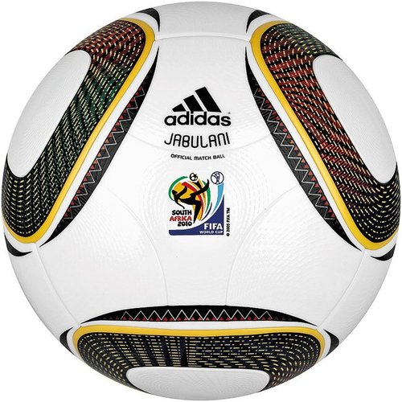

祝贺有志当选新一届南通棋类协会副秘书长
首页
五子棋新闻
#1 祝贺有志当选新一届南通棋类协会副秘书长 作者：锈刀 发表时间：2010-7-10 14:04:57
同标题
#2 Re:祝贺有志当选新一届南通棋类协会副秘书长 作者：岑小鱼 发表时间：2010-7-10 16:14:48
恭喜恭喜 ...
#3 Re:祝贺有志当选新一届南通棋类协会副秘书长 作者：黄药师 发表时间：2010-7-10 18:14:55

#4 Re:祝贺有志当选新一届南通棋类协会副秘书长 作者：被感动的人 发表时间：2010-7-10 18:17:47
恭喜恭喜，恭喜有志被选为牵头马and老黄牛
#5 Re:Re:祝贺有志当选新一届南通棋类协会副秘书长 作者：岳麓小棋后 发表时间：2010-7-10 18:31:21

普天同庆
#6 Re:祝贺有志当选新一届南通棋类协会副秘书长 作者：孤竹 发表时间：2010-7-10 19:34:19
同标题，，，也没发个新闻稿啥滴
#7 Re:祝贺有志当选新一届南通棋类协会副秘书长 作者：刀魂 发表时间：2010-7-10 19:35:52
江西人民发来贺电。。。
#8 Re:祝贺有志当选新一届南通棋类协会副秘书长 作者：周光乐 发表时间：2010-7-10 20:12:36
浙江人民发来贺电
#9 Re:祝贺有志当选新一届南通棋类协会副秘书长 作者：慕容晓文 发表时间：2010-7-10 20:20:49
上海人民全体恭贺
#10 Re:祝贺有志当选新一届南通棋类协会副秘书长 作者：弱惜 发表时间：2010-7-10 20:47:02
党中央国务院贺电
#11 Re:祝贺有志当选新一届南通棋类协会副秘书长 作者：潇洒 发表时间：2010-7-10 21:42:55
恭喜有志
#12 Re:祝贺有志当选新一届南通棋类协会副秘书长 作者：我就不信注册不上 发表时间：2010-7-10 21:55:32
网络棋友发来贺电
#13 Re:祝贺有志当选新一届南通棋类协会副秘书长 作者：江南新绿 发表时间：2010-7-10 23:52:53
代表江南新绿恭贺有志。
#14 Re:祝贺有志当选新一届南通棋类协会副秘书长 作者：掌棋宣传员 发表时间：2010-7-11 2:53:21
 恭喜恭喜
恭喜恭喜
#15 Re:祝贺有志当选新一届南通棋类协会副秘书长 作者：我是裁判 发表时间：2010-7-11 8:25:24
祝贺祝贺！！！！！
#16 Re:祝贺有志当选新一届南通棋类协会副秘书长 作者：厦门小天 发表时间：2010-7-11 10:07:07
祝贺!
#17 Re:祝贺有志当选新一届南通棋类协会副秘书长 作者：无尽 发表时间：2010-7-11 10:48:55
热烈祝贺! 
#18 Re:祝贺有志当选新一届南通棋类协会副秘书长 作者：老黄 发表时间：2010-7-11 10:53:27
潘多拉星球发来贺电。
#19 Re:祝贺有志当选新一届南通棋类协会副秘书长 作者：失落刀 发表时间：2010-7-11 11:22:09
祝贺，恭喜。
#20 Re:祝贺有志当选新一届南通棋类协会副秘书长 作者：聊城蓝剑 发表时间：2010-7-11 15:35:17
山东五子棋贺电：
祝贺有志被选举担任新一届南通棋类协会副秘书长
着标志着南通的五子棋的未来~
［此帖子已被 聊城蓝剑 在 2010-7-11 15:50:05 编辑过］
#21 Re:祝贺有志当选新一届南通棋类协会副秘书长 作者：傀儡 发表时间：2010-7-12 19:24:42
恭喜恭喜~！！
#22 Re:祝贺有志当选新一届南通棋类协会副秘书长 作者：只为你而飞 发表时间：2010-7-14 17:33:09
联合国发来贺电。
#23 Re:祝贺有志当选新一届南通棋类协会副秘书长 作者：啊呆 发表时间：2010-7-16 11:23:29
那美克星及天顶星人发来贺电
#24 Re:祝贺有志当选新一届南通棋类协会副秘书长 作者：沈毅 发表时间：2010-7-18 21:04:18
祝福以后
失去 拥有 开始 尽头
为什么总是令人苦透
欢聚 离愁 往前回首
淡茶 烈酒 滋味在心头
竹密不防 流水穿梭
山高岂碍白云过
不问容颜是否易老
取骄阳不可错过
竹密不防 流水穿梭
山高岂碍白云过
关怀 紧靠 弦和
山常在 水长流
风在吹 云厚
撒花絮 为你祝福以后
脸无怨 心无愁
寄语苍茫 青春尽投
教家园锦绣
山常在 水长流
风在吹 云厚
撒花絮 为你祝福以后
脸无怨 心无愁
寄语苍茫 青春尽投
教家园锦绣
教我家园光辉锦绣